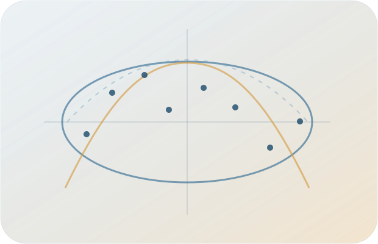

Spectra of Markov generators
Thermodynamic constraints on complex eigenvalues, correlation functions, and dissipation–coherence tradeoffs.
Nonequilibrium statistical physics
Postdoctoral Researcher The University of Tokyo
I study thermodynamic and spectral constraints on stochastic dynamics, with an emphasis on Markov generators, coherent oscillations, thermodynamic uncertainty relations, cyclic heat engines, and nonequilibrium phenomena.

About
I am a postdoctoral researcher at The University of Tokyo. I received my PhD from Zhejiang University. My work focuses on general principles that constrain fluctuations, relaxation, and oscillations in nonequilibrium systems.
A central theme of my research is to uncover universal constraints on nonequilibrium dynamics. In particular, I study how thermodynamic quantities such as dissipation, entropy production, and affinity restrict fluctuations, oscillations, and the spectra of stochastic dynamics. My work combines stochastic process, spectral analysis, analytical methods, and numerical computation.
Research
My current research centers on several interconnected themes.
Thermodynamic constraints on complex eigenvalues, correlation functions, and dissipation–coherence tradeoffs.
Relations between precision, dissipation, thermodynamic length, and information geometry away from quasistatic operation.
Finite-time thermodynamics, work fluctuations, intercycle correlations, and geometric bounds for microscopic cyclic engines.
Collective oscillations, continuous time-crystalline behavior, dissipative phase transitions, and quantum-to-classical structure.
Selected publications
A short selection; the complete record is available through Google Scholar.
Preprint, arXiv:2604.04620 (2026)
News
New preprint on a unified geometric description of dissipation and its fluctuations in finite-time microscopic heat engines.
Our ellipse theorem for Markov rate matrices was published in Physical Review Letters.
Presented work on thermodynamic spectral constraints at the Kyoto Workshop on Quantum Thermodynamics and Stochastic Thermodynamics.
Contact
For questions about my work, seminar invitations, or possible collaborations, please contact me by institutional email.